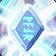
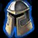
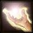
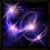
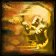

Übersicht
Stat-Priorität
Direkt beste Throughput-Steigerung.
Mehr Mana und Zauberkrit.
Regeneriert auch während du zauberst.
Regeneration; später zusätzliche Heilung über Spirituelle Führung.
Gut für Inspiration, aber hinter Heilung/Mana.
Defensiver Bonus.
Talentroute 10–60
Vollständige Talentbäume – Level-60-Build



| Level | Talent | Baum |
|---|---|---|
| 10 | Verbesserte Erneuerung 1/3 | Heilig |
| 11 | Verbesserte Erneuerung 2/3 | Heilig |
| 12 | Verbesserte Erneuerung 3/3 | Heilig |
| 13 | Heiligspezialisierung 1/5 | Heilig |
| 14 | Heiligspezialisierung 2/5 | Heilig |
| 15 | Göttlicher Furor 1/5 | Heilig |
| 16 | Göttlicher Furor 2/5 | Heilig |
| 17 | Göttlicher Furor 3/5 | Heilig |
| 18 | Göttlicher Furor 4/5 | Heilig |
| 19 | Göttlicher Furor 5/5 | Heilig |
| 20 | Heilige Nova 1/1 | Heilig |
| 21 | Inspiration 1/3 | Heilig |
| 22 | Inspiration 2/3 | Heilig |
| 23 | Inspiration 3/3 | Heilig |
| 24 | Heiligspezialisierung 3/5 | Heilig |
| 25 | Verbindende Heilung 1/1 | Heilig |
| 26 | Heilige Reichweite 1/2 | Heilig |
| 27 | Heilige Reichweite 2/2 | Heilig |
| 28 | Verbesserte Heilung 1/3 | Heilig |
| 29 | Verbesserte Heilung 2/3 | Heilig |
| 30 | Geist der Erlösung 1/1 | Heilig |
| 31 | Litanei des Lichts 1/2 | Heilig |
| 32 | Litanei des Lichts 2/2 | Heilig |
| 33 | Spirituelle Führung 1/5 | Heilig |
| 34 | Spirituelle Führung 2/5 | Heilig |
| 35 | Spirituelle Führung 3/5 | Heilig |
| 36 | Spirituelle Führung 4/5 | Heilig |
| 37 | Spirituelle Führung 5/5 | Heilig |
| 38 | Spirituelle Heilung 1/3 | Heilig |
| 39 | Spirituelle Heilung 2/3 | Heilig |
| 40 | Gebet der Besserung 1/1 | Heilig |
| 41 | Zwillingsdisziplinen 1/5 | Disziplin |
| 42 | Zwillingsdisziplinen 2/5 | Disziplin |
| 43 | Zwillingsdisziplinen 3/5 | Disziplin |
| 44 | Zwillingsdisziplinen 4/5 | Disziplin |
| 45 | Zwillingsdisziplinen 5/5 | Disziplin |
| 46 | Verbessertes Machtwort: Schild 1/3 | Disziplin |
| 47 | Verbessertes Machtwort: Schild 2/3 | Disziplin |
| 48 | Verbessertes Machtwort: Schild 3/3 | Disziplin |
| 49 | Schweigsame Entschlossenheit 1/3 | Disziplin |
| 50 | Schweigsame Entschlossenheit 2/3 | Disziplin |
| 51 | Innerer Fokus 1/1 | Disziplin |
| 52 | Meditation 1/3 | Disziplin |
| 53 | Meditation 2/3 | Disziplin |
| 54 | Meditation 3/3 | Disziplin |
| 55 | Schweigsame Entschlossenheit 3/3 | Disziplin |
| 56 | Mentale Stärke 1/5 | Disziplin |
| 57 | Mentale Stärke 2/5 | Disziplin |
| 58 | Mentale Stärke 3/5 | Disziplin |
| 59 | Mentale Stärke 4/5 | Disziplin |
| 60 | Mentale Stärke 5/5 | Disziplin |
Wichtige Skills
| Level | Skill | Warum wichtig? |
|---|---|---|
| 1 | Göttliche Pein | Dein früher offensiver Opener. |
| 4 | Schattenwort: Schmerz | DoT fürs Solo-Leveln. |
| 6 | Machtwort: Schild | Schutz vor Schaden und Pushback beim Questen. |
| 8 | Erneuerung | Kern-HoT auf Tank und für Bewegung. |
| 8 | Verblassen | Temporärer Bedrohungs-Reset. |
| 10 | Gedankenschlag | Starker Solo-Schadenszauber. |
| 12 | Inneres Feuer | Defensiver Eigenbuff. |
| 14 | Krankheit heilen | Wichtige Dungeon-Utility. |
| 16 | Heilen | Dein effizienter Standard-Heal. |
| 18 |  Magiebannung | Entfernt gefährliche Magieeffekte. |
| 20 | Blitzheilung | Schneller Notfall-Heal. |
| 20 | Heiliges Feuer | Bester Solo-Opener ab 20. |
| 20 |  Furchtzauberschutz | In Forever für jeden Priester trainierbar. |
| 20 | Heilige Nova | Talent: threatfreier Gruppenheal + AoE. |
| 25 | Verbindende Heilung | Talent: heilt Ziel und dich gleichzeitig. |
| 30 | Gebet der Heilung | Teurer Gruppenheal für echte AoE-Schadensphasen. |
| 30 | Göttlicher Willen | Willenskraft-Buff für Gruppe/Raid. |
| 32 | Krankheit aufheben | Verbesserte Krankheitsentfernung. |
| 40 | Große Heilung | Langsamer, großer Single-Target-Heal. |
| 40 | Gebet der Besserung | Talent: springender Heal, ideal auf dem Tank. |
| 40 | Brunnen des Lichts | Vor längeren/planbaren Schadensphasen aufstellen. |
Rotation & Heilpriorität
Single Target
Erneuerung auf Tank halten → Heilen als Standard → Blitzheilung bei Gefahr → Verbindende Heilung, wenn du + Tank verletzt seid → Gebet der Besserung auf Tank → Große Heilung für planbaren großen Schaden.
Gruppenschaden
Erneuerung auf Tank → Gebet der Besserung springen lassen → Gebet der Heilung nur wenn der Großteil der Gruppe niedrig ist → Heilige Nova bei gestapelter Gruppe und threatfreiem Heal.
Litanei des Lichts
Heilzauber bewusst abwechseln. Das Talent belohnt Heal → Flash Heal/Binding Heal statt denselben Zauber stumpf zu spammen.
Downranking
Heal und Greater Heal niedrigere Ränge für vorhersehbaren Schaden binden. Forever bestraft frühe Ränge weniger stark als Classic; Flash Heal bleibt eher der Notfallknopf.
Machtwort: Schild
Kann in Forever auch auf Rage-Tanks sinnvoll sein, weil sie durch den Absorb weiterhin Wut erzeugen.
Solo
Schild → Heiliges Feuer oder Gedankenschlag → Schattenwort: Schmerz → ggf. Smite → Zauberstab. Das spart Mana und Downtime.
Empfohlenes Gear
Level 13–20
Level 17–24
Level 17–26
Level 18–28
Level 26–35
Level 28–36
Level 30–38
Gear ab 30–60
Priorität: Heilungsmacht → Intelligenz → MP5 → Willenskraft → Zauberkrit. Nimm Dungeon- und Questitems mit diesen Werten; Stoff ist normal, aber die Werte sind wichtiger als „perfekte“ Optik.
Da die Beta bis Level 30 begrenzt war, behandle konkrete Level-60-BiS-Listen vor dem Launch noch als vorläufig.